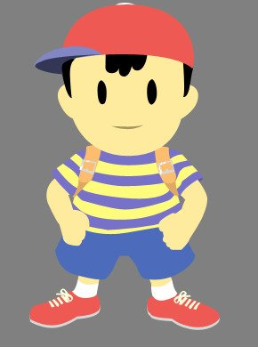

I don't remember much of what I really learned. I guess I learned how HTML and CSS work. I loved styling everything with CSS just because the appearance of my site was most important to me. I didn't add much content to my website seeing as how what I wanted to add was very difficult to add in. Javascript made me really mad and I don't ever want to work with it again even though I'll probably have to.
Caesar's Cipher Project.
I LOVED working with Python. I had worked with Python in the past so it was nice to return to it. We used Python to create our own Caesar's Cipher which helped us decode hidden messages and create hidden messages from regular words. We originally had it in ascii values but eventually changed it so that we would only receive alphabetical values. It was really fun to see the program decoding everything.
Social Network Project.
For this project, we continued to work with Python. In Python, we were able to create Social Networks in which we created a user for ourselves and other users. Our own user was able to add other users as friends, unfriend them, create their own posts, view others' posts, and comment on others' posts. This helped us understand the way social networks run things in the most basic way. Though the concept was fun, I don't think I learned very much during this portion of the course.
Arduino Robot Project.
This project was an overall absolute disaster. While using just the Arduino, we were able to learn about the basics of electricity, circuits, voltage, etc. That was a lot of fun. We got to mess around with different kinds of circuits and getting LEDs to work in diffrent ways. When it came to the actual robot, however, nothing was functional whatsoever. My group was struggling to much just to simply build our robot, which was very strange. When it came to attempting to run the robot, we were extremely unsuccessful. Our robot refused to go anywhere. It would run in a circle as the sensors simply moved from side to side, not really sensing anything. It was frustring. We got split into the other groups and for some reason, everyone's robots just decided to break. We spent a while attempting to problem solve but continued to be unsuccessful.
Google Assistant Project.
this project helped us undertand how companies work to create their phone assistants such as Siri, Cortana, Alexa, and Google. We created our own assistant in which we created many intents to ask questions, which our assistant answered. We wrote questions that the assistant could process and asnswers that the assistant could provide. I ended up making many, MANY sub-intents under each of my intents and sub-sub-intents for my already sub-intents. This was really fun for us. We had a good time inputting answers that our assistant would speak out to us.
Neural Network Project.
This project helped us learn how computers can function in comparisson to the human brain's functions. We had the comptuer push a button and learn to push the right button which awarded the computer with a Chicken Pot Py (get it? Py? Like, Python). I don't think I honestly learned very much, we just kind of went back to Python which was something I have understood for some time now. It was an interesting topic, though.

Take a look at my "Code" for each page on my website!
{kind=link}
{kind=link}
{kind=link}
{kind=link}
{kind=link}